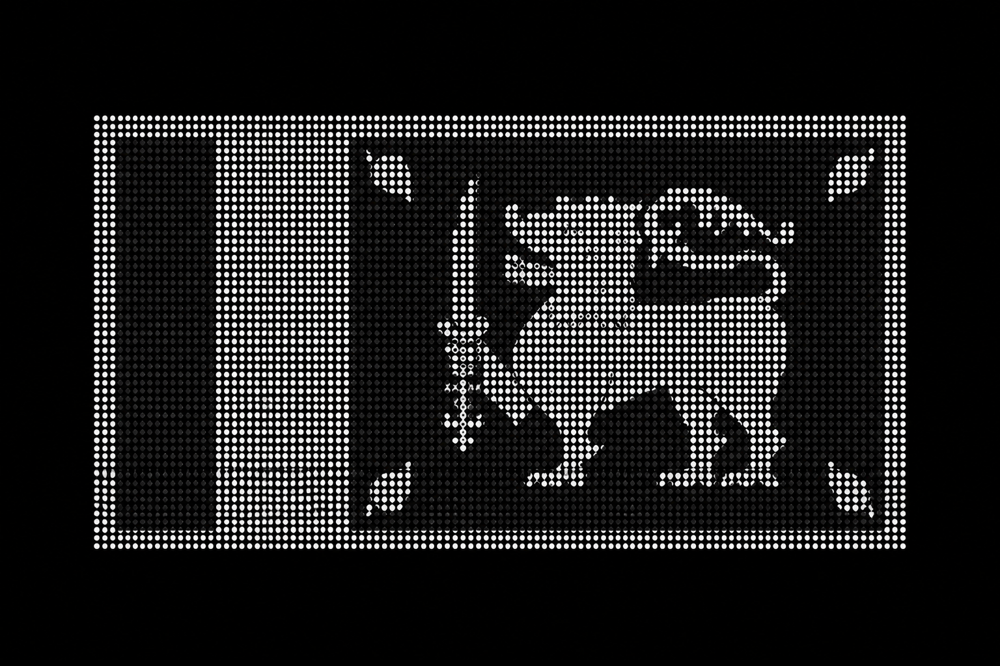
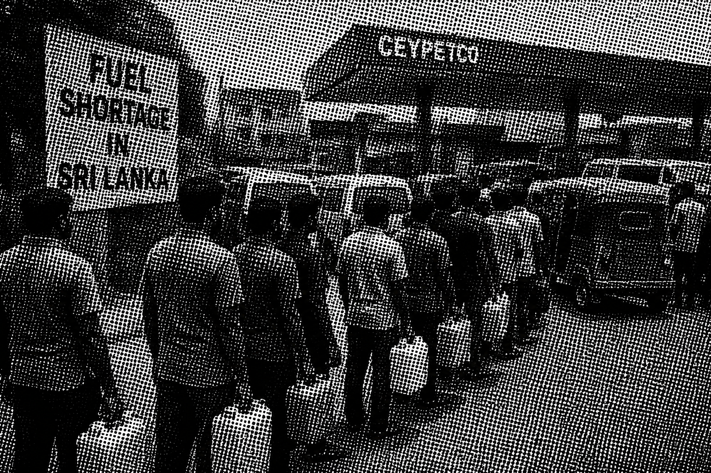
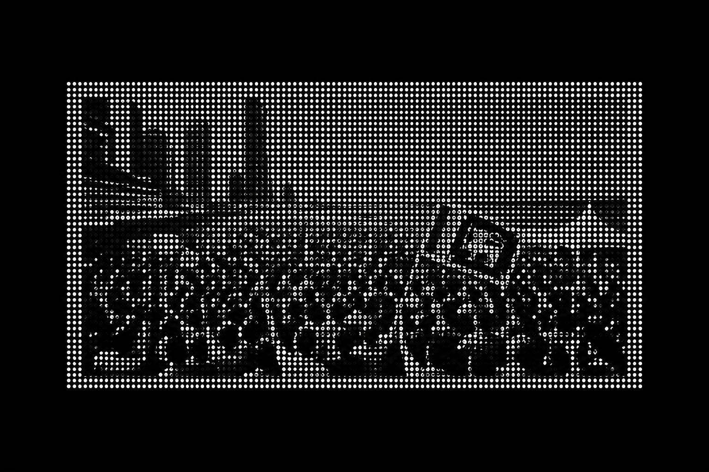
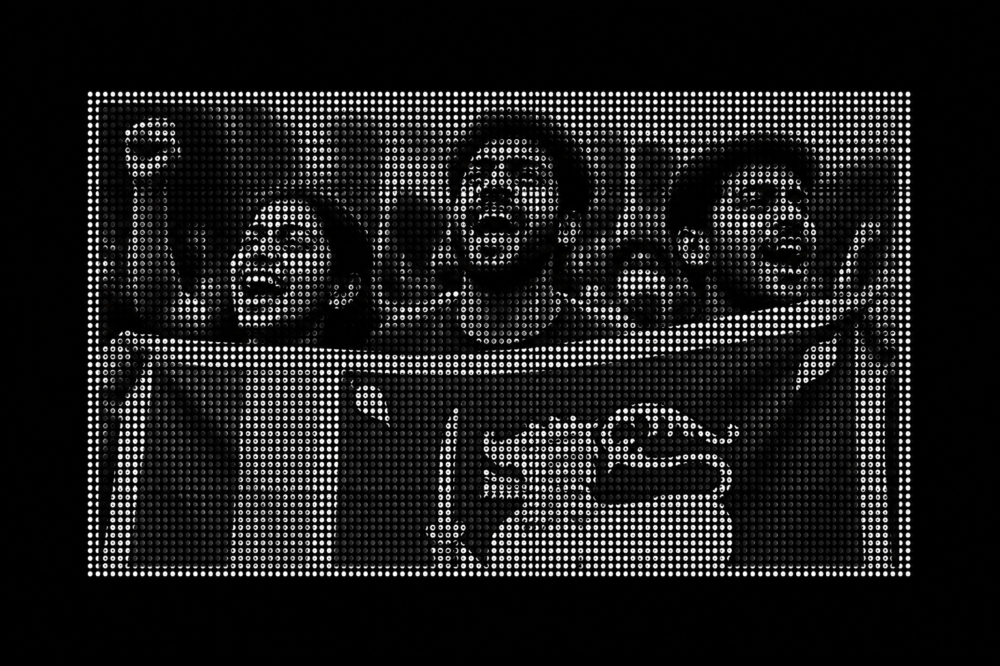

2020 — 2026
When the World
Takes to the
Streets
Every protest begins with one voice • Some become movements • Some change history.
Scroll to explore ↓
01
Where are protests happening?
Between 2020 and 2026, more than 117 major protests took place across the world. Each red dot represents one protest. Hover over a dot to learn more.
02
Why do people protest?
Although every movement is unique, many protests emerge from recurring motivations such as political freedom, labour rights, agriculture and economic justice.
03
Does a larger crowd mean success?
Larger crowds don't always lead to successful outcomes. This chart compares estimated crowd size with the success score assigned to each protest.
04
Sri Lanka The Movement That Changed Power
In 2022, Sri Lanka faced its worst economic crisis since independence. Fuel shortages, rising prices and daily struggles pushed citizens into the streets.

A Crisis Before A Revolution
The movement began with everyday struggles. Shortages and rising costs transformed frustration into collective action.

When People Became The Movement
Citizens from different backgrounds gathered at Galle Face Green, creating a shared space of resistance.

Pressure Reached Power
Public pressure reached the centre of political authority.

A Political Shift
President Gotabaya Rajapaksa resigned after months of sustained protests.
05
What makes a protest successful?
Success is not defined by the size of the crowd. It comes from the strength of the movement.